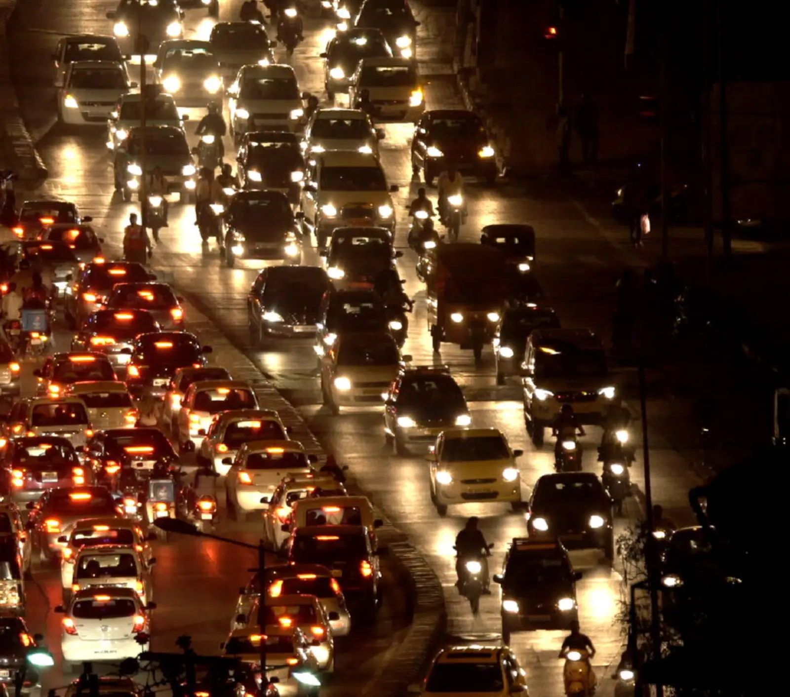
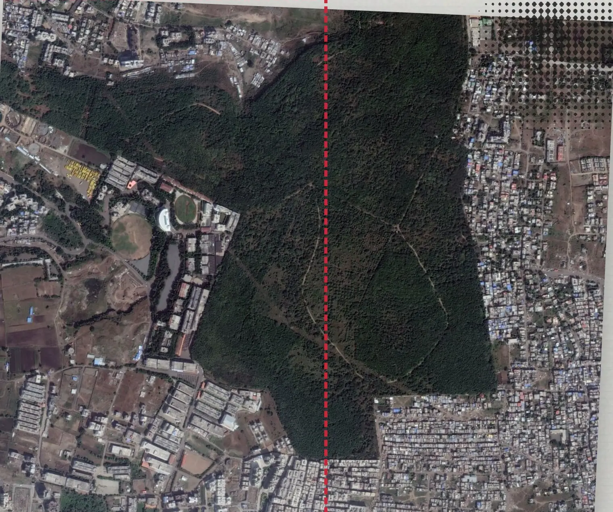
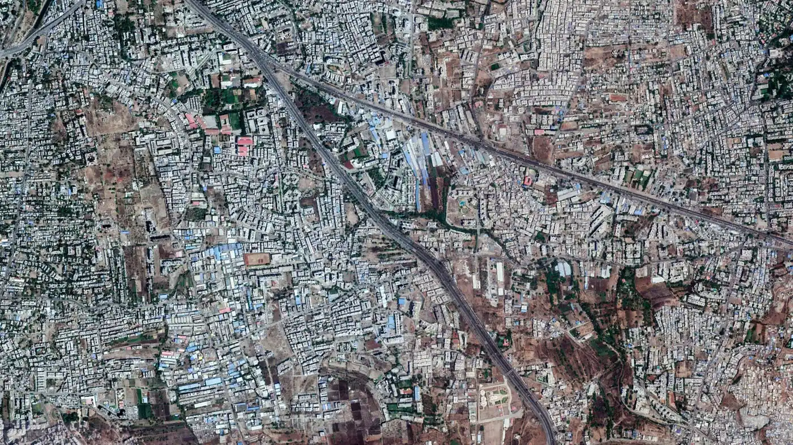
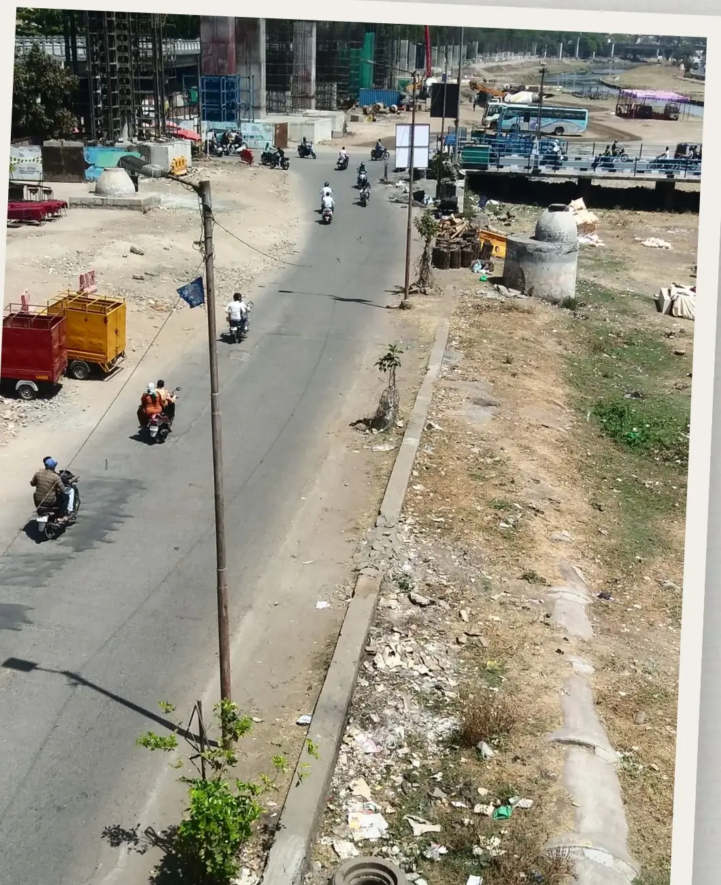
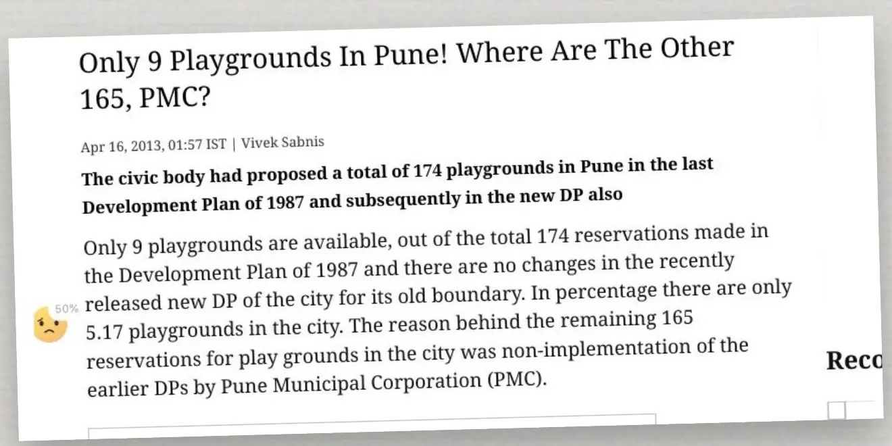

A documentary series in production · Rethink urban spaces
The
Space
Within
Who encroached our city?
A documentary series on how Indian cities are shaped, and the public spaces that hold them together.
Series in production · Created by Amar Kulkarni
The idea
People shape cities. Cities shape people.
So who decides the shape?
The series looks at how Indian cities are shaped, by plans, roads, land markets, courts and the people who live in them. And at the public spaces that connect a city and hold it together: streets, hills, rivers, parks, playgrounds.
Every city has a plan that reserves them. We follow the paper trail to see where they went.

Imagery: Google Earth
How it works
Understanding the fabric of urban public space
What connects you to your city is the urban public space, formed by a complex matrix of built, unbuilt and natural spaces. Streets, parks, heritage areas, markets, open grounds, riversides, hills and public transport act as corridors for our social and environmental life in the city.
Layer 01 of 9
Natural spaces
The ground everything else is laid on
- Hills
- Mountains
- Rivers and tributaries
- Ocean and beaches
- Lakes
- Urban forests
- Trees
- Grasslands
Connected to
Layer 02 of 9
Fauna
Life that shares the city with us
- Birds
- Amphibians
- Reptiles
- Snails
- Ants
- Insects
- Mammals
- Aquatic insects
- Fishes
Connected to
Layer 03 of 9
Formal spaces
Open space the plan reserves
- Gardens
- Community farms
- Historical places
- Playgrounds
- Sports arenas
- Public squares and plazas
- Open air auditoriums
- Kids' play areas
- Fountains
Connected to
Layer 04 of 9
Informal spaces
Space people claim without a plan
- Verandahs
- Brownfields
- Leftover patches
- Community spaces
- Slum fabric spaces
- Street front spaces
- Open and grey markets
- Vacant lots
Connected to
Layer 05 of 9
Built fabric
The city's blocks and districts
- Downtown
- Old city
- Heritage
- Historical
- Gated city
- Commercial
- Residential
- Industrial
- Mixed land use
Connected to
Layer 06 of 9
Built public spaces
Buildings everyone can walk into
- Railway stations
- Airports
- Bus stands and stops
- Community halls
- Public libraries
- Post offices
- Markets
Connected to
Layer 07 of 9
Transport spaces
The network that ties it together
- Footpaths
- Pathways
- Cycle tracks
- Streets
- Bridges
- Street side spaces
- Bus and tram stops
- Street green infrastructure
Connected to
Layer 08 of 9
Mobility
What moves through the network
- Walking
- Bikes
- Cars
- Commercial vehicles
- Three wheelers
- Tram
- Trolley
- Bus
- BRT
- Metro and subway
Connected to
Layer 09 of 9
People
Who all of it is for
- Walkers
- Vendors
- Children
- Elders
- Workers
- Residents
- Visitors
- Everyone
Connected to
How the layers act on each other
36 connections
Every layer touches every other. Most of the pressure runs one way: the built, moving city eats into the natural and open ground beneath it.
- Pressure: one layer eats into the other
- Sustains: one layer keeps the other alive
- Hosts: one layer carries or serves the other
- Dot size: how strong the link is
Select a layer to see its threads through the stack, or pick any dot in the matrix.
Indicators of social change
Why public urban space, and not private?
A mall is not a public space.
| Question | Public urban spaces | Private urban spaces |
|---|---|---|
| Examples | Parks, public squares, the street, riverbanks, natural places in the city | Malls, cafés and restaurants, private sports facilities, private leisure clubs |
| Owned by | The public | A private company |
| Who gets in | Everyone, despite social class, religion, caste, creed or colour | Restricted access: those who are let in |
| Cost | Free access for every social class | Paid access, one way or another |
| The poorest | Can walk into any public urban space without discrimination | Cannot access private urban spaces |
| What it does | Brings people together from various classes, castes, religions and nationalities | Creates social hierarchy, dividing people by their purchasing power |
| Effect on society | Socially inclusive. Promotes equity by serving everyone, especially vulnerable groups | Socially exclusive. More private urban space promotes inequality and consumerism |
One holds a city together. The other divides it by purchasing power.
They saw it coming
Who is a city for?
Cities have the capability of providing something for everybody, only because, and only when, they are created by everybody.Jane JacobsThe Death and Life of Great American Cities, 1961
The right to the city is far more than the individual liberty to access urban resources: it is a right to change ourselves by changing the city.David HarveyThe Right to the City, 2008
Our criminal indifference to cities … allowed conditions to deteriorate to sub-human levels.Charles CorreaGreat City, Terrible Place
It is the architecture of impatient social imperialism, the architecture of individualism, the architecture of exclusion.Justice Gautam PatelBombay High Court, Safe Cities symposium, August 2013
What the series asks
Questions no one answers
Cities are made for people. But which people?
When a mall replaces a playground, who loses?
If cities are engines of growth, why is urban poverty growing?
What does a child see from a slum window? And from a tower?
Is public space a right, or whatever is left after building?
Who decides where a road goes, and what it runs over?
Can a city that buries its rivers and cuts its hills still breathe?
The plan promised a playground. Where did it go?
Drawn from the series' own scripts, voice over drafts and interview questions, 2015 to 2025.

Uncontrolled urbanisation · Imagery: Google Earth
From the first website
Uncontrolled urbanisation?
In India, understanding the state of urban public spaces is more critical than ever. The quality of life in our cities depends, directly and indirectly, on the public spaces we live in.
Read the state of urban spacesThe series
One question. As many cities as it takes.
Episodes of 26 to 45 minutes. Count and length shaped with the producer and the platform.
Per episode: a hill, a river, a street, a playground. Each one a live fight, each one linked to the next.
Pune is filmed. The method travels to whichever cities the partner wants to reach.
A ten episode schematic is written. The cities are open.
Possible stories
A menu, not a fixed list
No Place to Play
Playgrounds on paper, parking lots and towers in reality.
Roads Over Rivers and Hills
A riverside road, the tekdis and who pays for speed.
A Forest in the City
Aarey, the national park edge, and the coast.
The Last Hills
The Aravallis, a hillock, and what the Supreme Court said.
Lakes and Flyovers
A city of lakes, fighting the flyovers built beside them.
Your City Here
Kolkata's wetlands, Goa's coast, Chennai's marshes, Hyderabad's lakes, hill towns.
The pilot · 26 min
No place to play
Pune's 1987 plan promised 174 playgrounds. By 2013, 9 existed. Children play in parking lots and on the street. We follow them, their parents and the paper trail of the land meant for them.
Where did the reserved ground go, and who signed off?

